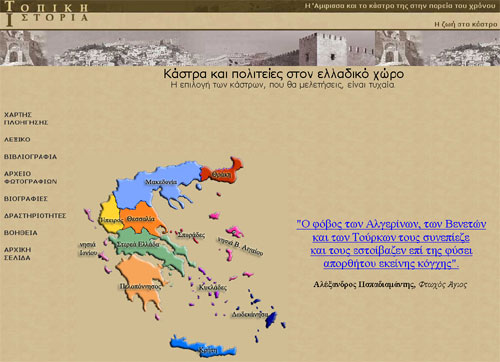
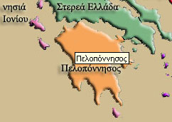
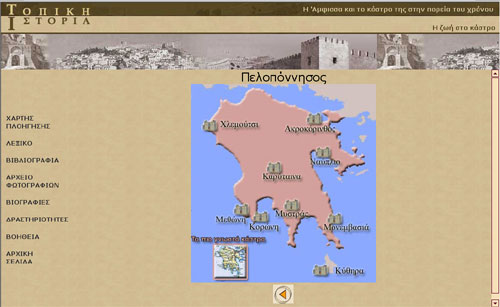
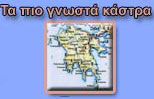
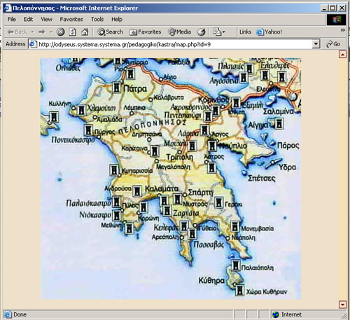

| Εγχειρίδιο Χρήσης |
7.3 «Κάστρα και πολιτείες στον ελλαδικό χώρο»Η επιλογή «Κάστρα και Πολιτείες στον ελλαδικό χώρο» εμφανίζεται στη δεύτερη ενότητα του εκπαιδευτικού λογισμικού. Μέσω αυτής ο χρήστης μπορεί να πλοηγηθεί στο χάρτη της Ελλάδας και να μάθει περισσότερες πληροφορίες για μερικά από τα κάστρα της. Σημειώνεται ότι η επιλογή των κάστρων είναι τυχαία.  Εικόνα 7.3.1 Κάστρα και πολιτείες στον ελλαδικό χώρο Όταν ο κέρσορας περνάει πάνω από μία ενεργή περιοχή του χάρτη, εμφανίζεται το όνομα του γεωγραφικού διαμερίσματος. Κάνοντας κλικ ο χρήστης μεταφέρεται στο χάρτη του γεωγραφικού διαμερίσματος, που επέλεξε.  Εικόνα 7.3.2 Κάστρα και πολιτείες στον ελλαδικό χώρο - Επιλέγοντας περιοχή Ο νέος χάρτης που εμφανίζεται περιέχει, ενδεικτικά κάποια κάστρα που βρίσκονται σε αυτή την περιοχή. Κάνοντας κλικ σε κάποιο από αυτά, ο χρήστης βρίσκει πληροφορίες για το συγκεκριμένο κάστρο.  Εικόνα 7.3.3 Κάστρα και πολιτείες στον ελλαδικό χώρο - Περιοχή Κάθε γεωγραφικό διαμέρισμα, εκτός από τα κάστρα που περιέχει, προσφέρει και την επιλογή «Τα πιο γνωστά κάστρα» όπως φαίνεται και στην Εικόνα 7.3.4. Κάνοντας κλικ σε αυτή, εμφανίζεται σε νέο παράθυρο, χάρτης που περιλαμβάνει τα πιο γνωστά κάστρα του συγκεκριμένου γεωγραφικού διαμερίσματος.  Εικόνα 7.3.4 Τα πιο γνωστά κάστρα  Εικόνα 7.3.5 Τα πιο γνωστά κάστρα - χάρτης Σε όλη την ενότητα το παρακάτω εικονίδιο - κουμπί προσφέρει τη δυνατότητα επιστροφής σε προηγούμενες σελίδες, που επισκέφτηκε ο χρήστης.
Εικόνα 7.3.6 Κουμπί Επιστροφής |